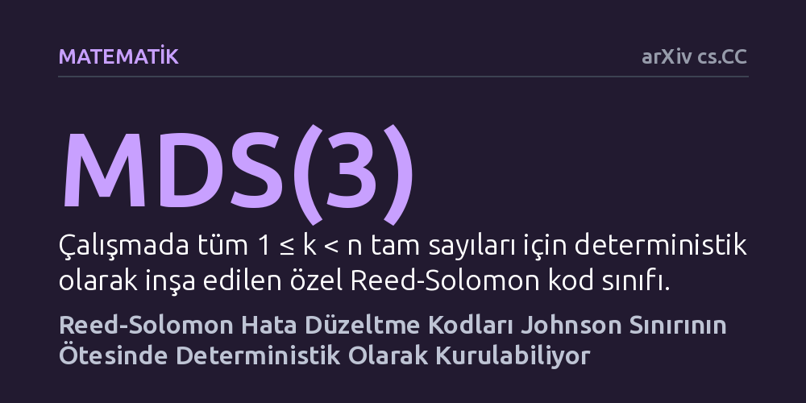

MATEMATIK · arXiv cs.CC · 2026-10-27
Araştırmacılar, dijital iletişimde kullanılan Reed-Solomon kodlarının teorik Johnson sınırının ötesinde rastlantısallığa dayanmadan kurulup kurulamayacağını inceledi. Çalışmada, aşırı gürültülü ortamlarda dahi liste halinde çözülebilen bu kodların yarı-polinom zamanda deterministik olarak inşa edilebildiği gösterildi.
Veri iletimi ve depolamada ağır gürültüye dirençli hata düzeltme kodlarının inşasında rastlantısallığa muhtaç olunmadığını, kesin algoritmalarla da bu sınırların aşılabileceğini gösteriyor.

Dijital dünyada verinin bir noktadan diğerine kayıpsız iletilmesi modern teknolojinin en temel gereksinimlerinden biridir. Sabit disklerden cep telefonlarına, uydu yayınlarından barkod sistemlerine kadar pek çok alanda Reed-Solomon kodları adı verilen matematiksel yapılar kullanılır. Bu kodlar; iletim sırasında manyetik bozulma, atmosferik parazit veya fiziksel hasar nedeniyle kaybolan veri parçalarını matematiksel olarak yeniden inşa etmeyi sağlar.
Ancak gürültü miktarı belirli bir eşiği aştığında, iletilen orijinal veriyi tek bir kesin sonuç olarak kurtarmak imkansız hale gelir. Bu gibi durumlarda kodlama teorisyenleri 'liste halinde kod çözme' yaklaşımına başvurur; amaç tek bir benzersiz mesaj bulmak yerine, doğru mesajı da mutlaka içeren kısa bir olası mesajlar listesi oluşturmaktır. Uzun yıllar boyunca bu listenin etkin biçimde çıkarılabileceği hata payı, 'Johnson sınırı' adı verilen teorik bir bariyerle sınırlandırılmıştır. Rastgele yöntemlerle bu sınırın aşılabileceği bilinse de şansa yer bırakmayan, tamamen kurallı ve doğrudan bir yöntemle bu sınırın aşılıp aşılamayacağı temel bir açık soru olarak kalmıştır.
Bu soruya yanıt aramak laboratuvarda fiziksel deneyler yapmayı ya da bilgisayarlarda rastgele simülasyonlar çalıştırmayı değil, matematiksel kesinlik taşıyan bir ispat geliştirmeyi gerektirir. Yazarlar, şans eseri çalışan veya rastgele seçimler yapan olasılıksal algoritmalar yerine, her adımı baştan sona öngörülebilir olan deterministik bir inşa yöntemi hedeflemiştir.
Araştırmacılar bu hedef doğrultusunda teorik bilgisayar biliminin iki farklı alanını birleştirdi. Cebirsel hesaplamalarda kullanılan 'tek-okumalı determinantlar için polinom özdeşlik testi' ile doğrusal matris kesişimlerindeki 'yalıtıcı ağırlık' teknikleri arasında bir bağ kuruldu. Bu teorik köprü, araştırmacıların rastgele bileşenlere ihtiyaç duymaksızın gürültüye dayanıklı kodları adım adım inşa eden deterministik bir algoritma tasarlamasını sağladı.
Çalışmanın ana bulgusu, Reed-Solomon kodlarının Johnson sınırının ötesindeki aşırı gürültülü koşullarda dahi liste halinde çözülebilir biçimde deterministik olarak inşa edilebilmesidir. Ortaya konan algoritma, hata oranı bire çok yakın olduğunda bile doğru mesajı içeren listenin boyutunu kontrol altında tutmakta ve yarı-polinom zamanda çalışmaktadır.
Araştırma ayrıca kodlama teorisinde MDS(3) olarak adlandırılan özel Reed-Solomon kodları için de benzer kazanımlar sunmuştur. Sabit kodlama oranı rejiminde yapılan bu yeni kurgu, daha önce literatürdeki mevcut yöntemlerin gerektirdiği devasa cisim boyutu üst sınırını belirgin biçimde aşağı çekerek çok daha sıkı bir matematiksel çerçeveye oturtmuştur.
Bu sonuç, teorik bilgisayar biliminde rastgeleliğin hesaplama gücüne olan etkisini anlama çabalarında önemli bir kilometre taşıdır. Rastgele adımlarla çözülebildiği bilinen karmaşık problemlerin tamamen deterministik yollarla da çözülebileceğini göstermesi, algoritmaların sınırlarına dair kuramsal anlayışı güçlendirmektedir.
Bununla birlikte, elde edilen yöntemin gündelik mühendislik uygulamalarına hemen geçmesi beklenmemelidir. Yarı-polinom zaman karmaşıklığı kuramsal açıdan kayda değer bir ilerleme olsa da anlık veri iletimi yapan modern ağ donanımlarının ihtiyaç duyduğu doğrusal zaman hızlarının halen gerisindedir. Yine de çalışma, gelecekte daha hızlı ve pratik algoritmaların geliştirilmesine temel oluşturacak güçlü bir kuramsal basamak sağlamaktadır.